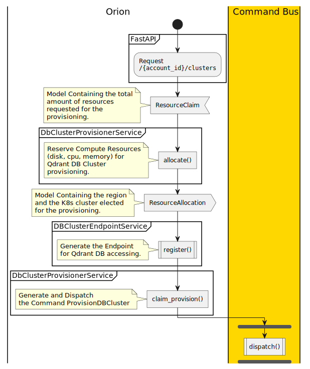
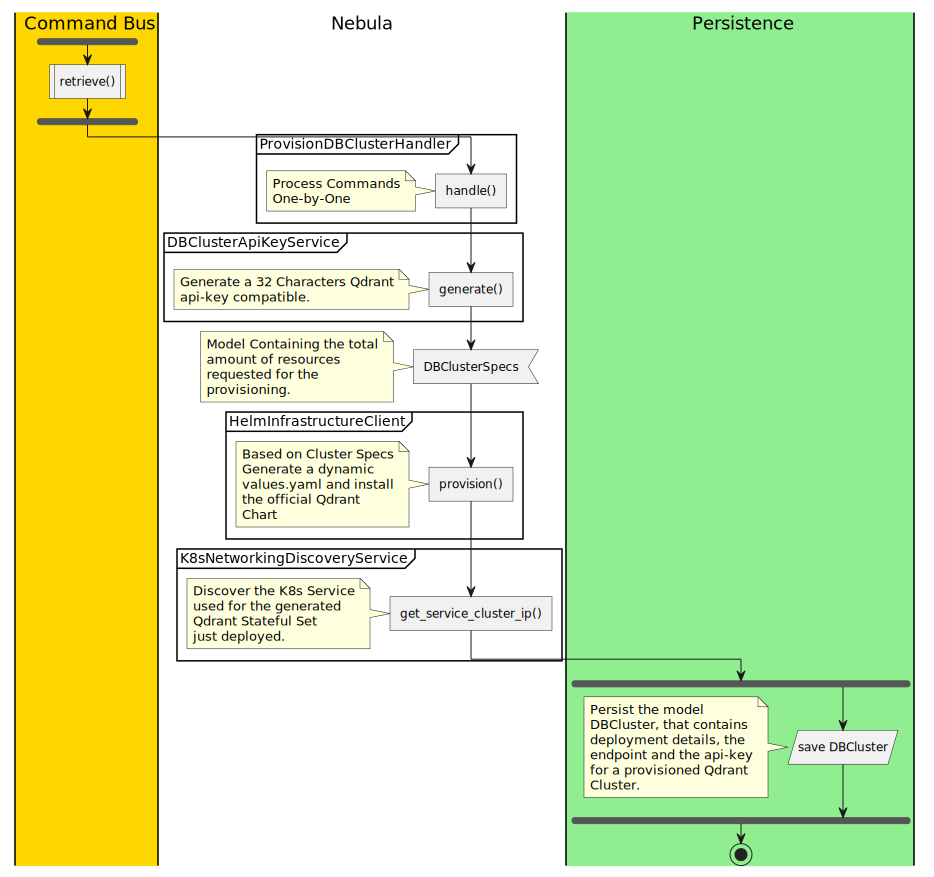
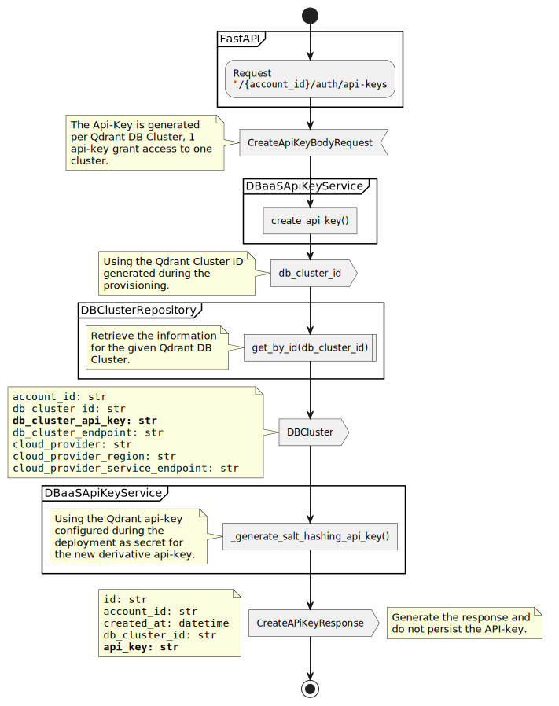
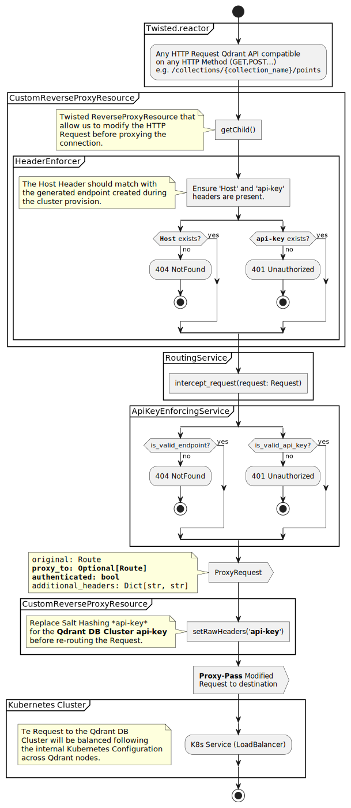

Use Cases
Provision New Qdrant DB Cluster
This use case is fundamental in the user-story prototype. To successfully address it, it is crucial to consider the challenges and key points that it presents.
Identified Pitfalls
- 1 - Long Runs
Provisioning infrastructure is costly and slow in terms of computation, as observed in the public clouds of AWS and other providers. This complexity is evident in the proliferation of IaaC tools, such as Terraform or Pulumi.
- 2 - Cloud Diversity
Each cloud provider has different APIs for infrastructure provisioning. Although tools like Terraform seek to homogenize the process, each provider has specific implementation details.
- 3 - User Experience
Provisioning resources On-Demand can affect the user experience in Qdrant Cloud. If the provisions are slow, the experience deteriorates. On the other hand, having computational resources in reserve increases TCO costs.
Strategies for Risk Minimization
After identifying the critical points of the use case, we seek solutions that minimize or eliminate frictions to increase the project’s chances of success.
To reduce the heterogeneity in infrastructure provisioning, we opted to use Kubernetes, a higher-level abstraction layer that allows us to improve utilization and increase installation density per instance, thus reducing the total cost of the product.
To minimize the waiting time from the start of provisioning a Kubernetes cluster until its availability, we have made key architectural decisions. One of them is to use managed Kubernetes clusters from cloud providers, taking advantage of their serverless capabilities. This decision involves trade-offs, such as less control over the underlying infrastructure, but it is the most pragmatic for a prototype.
Additionally, we have turned this use case into an asynchronous process, where the client sends a request for a new cluster that is validated and processed in the background. This approach facilitates the scalability of our application with an acceptable increase in development complexity, following a common design pattern.
Orion Implementation Details
Based on the previously described, we will review the activity diagrams that represent the use cases and will discuss the most notable points for the Orion component.
It is important to remember that Orion is a service responsible for exposing a public REST API and processing client requests. The response time to these requests is, therefore, a crucial factor to consider.
{kind=link}
One of the most highlighted elements in the diagram is the “ResourceClaim” and the “ResourceAllocation”. The “Claim” is a model or request that needs to be satisfied and includes the chosen cloud provider, the region, the number of nodes in the Qdrant cluster, as well as its associated computational resources.
However, this API does not guarantee that all requests can be fulfilled due to a possible lack of computational resources associated with a specific cloud provider and region.
For this reason, requests might be rejected due to a lack of resources available for a specific claim. A strategy for managing such eventualities is to accept the claims even when they cannot be immediately satisfied, assuming that more computational resources will eventually be added and the request can be fulfilled (202 HTTP Accepted).
The “Resource Allocation”, on the other hand, is the confirmation that the total of claimed resources will eventually be satisfied in the background. This is where the Command Bus, as an inter-service communication piece, becomes more important, as it allows us to decouple from the provisioning of workloads, delay them in case of problems, or even retry them if they fail.
Implementation Details of Nebula
Nebula is responsible for materializing the provisioning of new clusters.
For this purpose, it receives a command of the type ProvisionDBCluster.
account_id: 988ed5bd-b52f-4b03-a528-c774410e036d
cloud_provider: minikube
cloud_region: local
cluster_id: 12a607bb-1751-4a85-83c9-3f1911cef4e7
cluster_name: cloud-test
cluster_version: 1.9.4
created_at: '2024-06-05 21:54:03.953640'
db_configuration:
cluster_endpoint: 7455ba01-fc9a-5cb0-9d7d-956c81dab0ce.local.minikube.localhost
cluster_id: 12a607bb-1751-4a85-83c9-3f1911cef4e7
created_at: 2024-06-05 19:54:03.953619
id: 3f344bab-2c8f-5be7-a62d-d64fcc4c62b4
node_configuration:
cpu: 100
disk: 1
memory: 128
num_nodes: 3
id: 688c14fe-9b83-5887-ba6c-f4fa310adc63
metadata: {}
name: ProvisionDBCluster
schema_id: 701
type: COMMAND
It is important to mention that commands are non-repudiable, that is, once issued, they represent a call to action that will be executed sooner or later. No business logic should be able to discard a command, as this would significantly affect the integrity of our data.
{kind=link}
Once the command is received by Nebula, a 32-character api-key will be generated that will act as a secret. This api-key will not be shared with the user and will serve as the seed for generating other api-keys in subsequent use cases.
With the information from the command, we will create a DBClusterSpecs model
that contains the necessary details for an InfrastructureClient to carry out
the installation.
The InfrastructureClient is a key concept; its implementation is based on
an abstract class interface. Its purpose is to act as a CONTRACT that all
implementations must follow. These implementations have the sole responsibility
of turning the specifications of a Qdrant DB Cluster into a functional
installation. We could have different implementations, such as defining a
Custom Resource Definition in Kubernetes, using a Kubernetes client, or
installing via Helm using a Chart.
In this prototype, we have opted to install Qdrant using its official Chart. Although it is not the most reliable and maintainable method, it is suitable in the context of a prototype.
Should the prototype evolve, we could always develop a new implementation that
extends from InfrastructureClient, without requiring additional code changes
(low coupling).
Once the cluster has been provisioned, it is crucial to persist its details, such as the network configuration and the generated api-key.
At this moment, the cluster would not yet be accessible to the client, either because the client does not know the secret provisioning api-key or because the Kubernetes infrastructure supporting the cluster is not exposed to the internet. The following use cases will define how the user can fully experience the provisioning and use of the cluster.
Generate API-key
During the provisioning of Qdrant, the API key is internally generated and not shared with the client. Qdrant open source exposes different ways to secure an installation, but all rely on the API key or the use of it as a secret to sign other types of tokens, such as JWTs.
Based on this and after examining the current implementation of API-KEY generation in Qdrant’s cloud, we have decided to adopt the following approach:
Using the internal and private API key generated during the provisioning of the cluster, we will generate new keys using a salt hashing strategy.
This method allows us to create an arbitrary number of API keys that will be associated with a specific Qdrant cluster, unlike in the Qdrant Cloud where the same API key can be used across different clusters.
Normally, token generation and everything related to AuthZ/AuthN is managed by an IDP, or through implementations like OAUTH2 or similar. However, as we are working on a prototype and the generation of keys with salt hashing is relatively simple, we have opted for this in-house solution instead of depending on external IDPs or similar.
{kind=link}
This use case allows for the instant generation of API keys, but involves some significant problems and considerations:
- 1 - Regulation:
Storing secrets and derived keys could be sensitive in environments with SOC2 certification or stricter.
- 2 - Security:
The type of key generated is not revocable and does not have an expiration time, which means once generated, it becomes a Golden Ticket.
Connecting to the Qdrant Cluster Through GateKeeper
This use case integrates previous elements to provide an end-to-end (E2E) experience, allowing the client, after provisioning a cluster and generating an api-key, to access it via the specific endpoint created during the provisioning process.
These endpoints are actually DNS records similar to:
7455ba01-fc9a-5cb0-9d7d-956c81dab0ce.local.minikube.localhost
The structure of these endpoints follows the model of the endpoints generated by Qdrant’s Private Cloud, and consist of the following sections:
<QDRANT_CLUSTER_UUID>.<CLOUD_REGION>.<CLOUD_PROVIDER>.<TLD>
Thus, the endpoints are predictable and dedicated per cluster. However, in this implementation, we have not considered two essential points that any Reverse-Proxy or HTTP Endpoint should provide:
- 1 - A/AAAA DNS Record
Essentially, a DNS record should be added in the DNS zone that matches the endpoint, and consequently making it resolvable via DNS.
- 2 - SSL Certificates
Generation of certificates of the type
*.<CLOUD_REGION>.<CLOUD_PROVIDER>.<TLD>as SubjectAltName to ensure end-to-end encrypted communication.
These would be minimal features that the endpoints should support in a production environment.
Although there are solutions like API-Gateways that offer these features or similar ones like SSL enforcement or URL tokenization out-of-the-box, we have chosen not to include more infrastructure components for this prototype, creating a small Reverse Proxy based on Twisted, as a technical exercise to understand how these products work internally.
{kind=link}
The above diagram shows the entire flow of activity of the Reverse Proxy called GateKeeper, how a request is evaluated and how it is proxied to the final destination.
It is important to mention that the URLs or domain names that accompany the web
are expressed in the form of HTTP headers; in this case, the domain is specified
by the Host header.
Additionally, Qdrant specifies two more headers for authentication: one is
api-key and the other is Bearer in case of using JWTs signed with the
api-key.
This implementation basically rejects any request that does not include these two headers. If the request contains them, GateKeeper will verify the Host received with its internal database to determine where to proxy the request.
Regarding the api-key, GateKeeper will use the ‘secret’ (the key with which the Qdrant DB Cluster was provisioned) to verify that it is a derived key.
If both the Host header is recognizable and the api-key is legitimate, GateKeeper will proceed to proxy the request to its final destination and return the response to the user.
Interesting Considerations of this Approach
- 1 - Scalability
Since routing is done at the DNS level, we can position different deployments of GateKeeper segmented by region or cloud provider, close to the Qdrant servers to reduce latencies.
- 2 - Security
The Reverse Proxy allows all Qdrant Cluster provisions to be made over private networks without internet connection, thus increasing security through network segmentation and leaving the Reverse Proxy (or an API-Gateway in a more real environment) as the only point of entry to the product.
- 3 - Authorization
The Reverse Proxy allows the use of a wider variety of security mechanisms transparently, such as OAuth2, two-factor authentication, etc., without requiring changes to Qdrant’s product implementation.
- 4 - Observability/Limits
Using a Reverse Proxy as a central point allows us to establish usage quotas or rate limits, as well as implement usage-based monetization if necessary, without the internal product or service having to change for it.
The use of reverse proxy or layer 4 and 7 routers is a well-established network architecture. In Kubernetes, we have very high-quality options like Istio, Kuadrant, or OPA, which offer many of the features and features described here, production-ready and out-of-the-box.